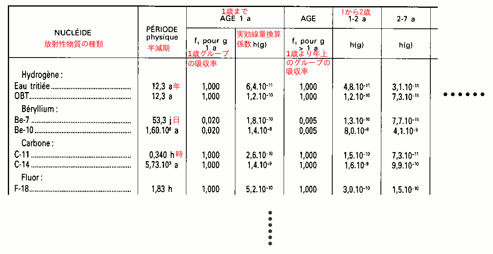
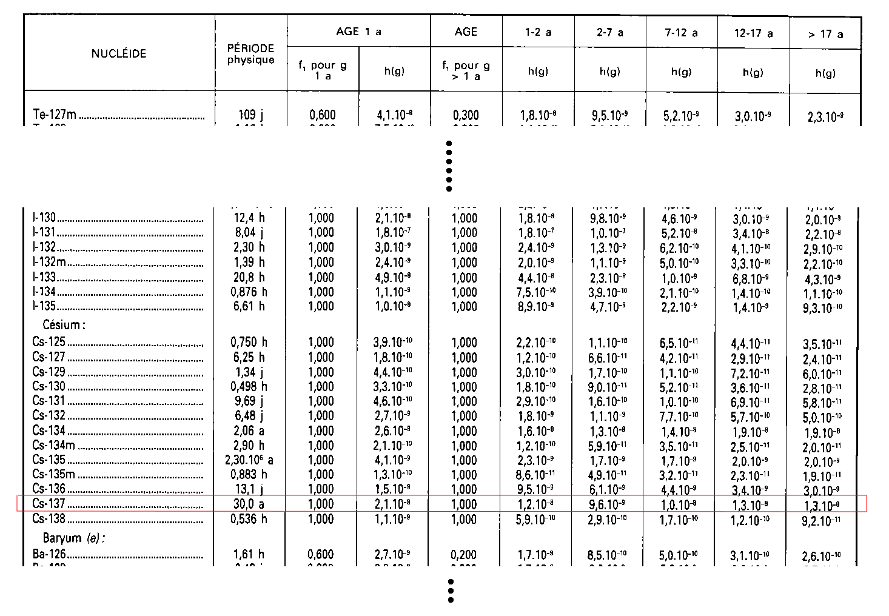
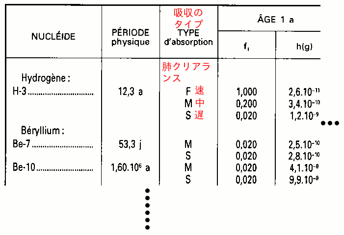
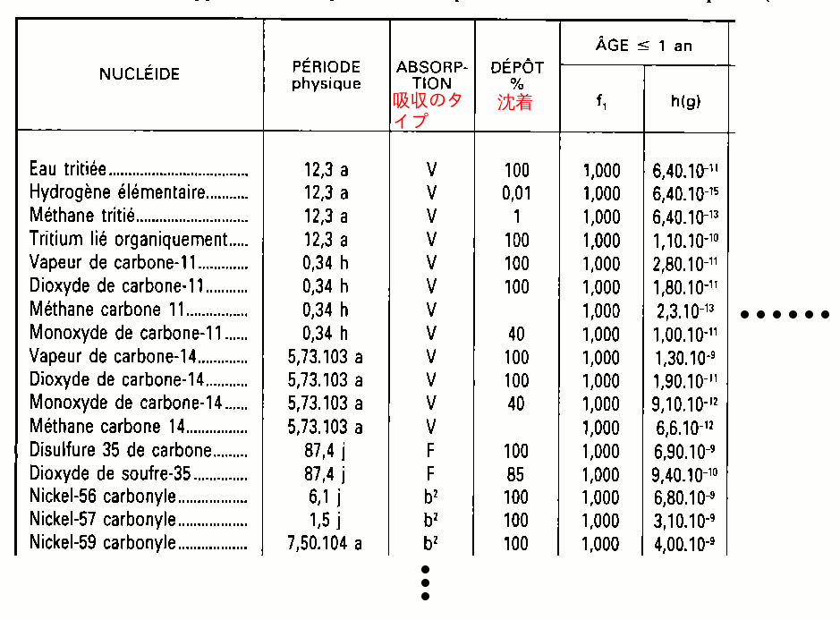

被曝量＝外部被曝量＋内部被曝量となる。
外部被曝は、医療放射線などで特定の組織に被曝するのを除けば、環境から体全体に放射線を受けることだ。
各時間の「空間線量率」（シーベルト／時）を、知りたい期間の全ての時間について合計すれば、その期間の外部被曝量が分かる。
内部被曝は、呼吸したり食べたり飲んだりして体に入った放射性物質から放射線を受けることだ。
内部被曝量の計算には
内部被曝量＝（h食 × A食）を飲食した全ての放射性物質について合計したもの＋（h吸 × A吸）を吸い込んだ全ての放射性物質について合計したもの
ここで使う文書では、表もフランス語で書かれている。そのうち表を日本語に訳してここに載せようと思うけど、今はとりあえずフランス語のまま使う。ちょっと不便だけどごめんね。
（欧州放射線リスク委員会 (ECRR） の2010年の勧告の244ページにも同様の使い方ができる線量計数の表がある。すべての放射性物質が掲載されているわけではないけれども、主な物質は載っているし、新しい研究成果が考慮され、被曝量が ICRP よりも多く見積もられているし、胎児用の線量係数についても明記されている。 ECRR の表に載っている物質については、そちらの線量係数を使って内部被曝量を計算すると良いだろう。）
表は「一般人用」と「作業員用」に分かれている。 表1.1、表1.2、表1.3、表2.1、表2.2は一般人用、表3.1、表3.2、表3.3は作業員用だ。ただし、表3.3は一般人用にも使う。 ここではさしあたり、一般人用の表の使い方だけ説明するよ。 ラドンとその崩壊でできる放射性物質だけは計算が別で、表に載っていないけど、それについての説明は省略する。
表1.1（58006ページ、pdfでは4ページめ）は、放射性物質が飲食で体に入る場合の実効線量換算係数 h食 。物質の種類別・胃腸からの吸収率別・年齢別に、 h食 の数値が並べられている。 数字の書き方はヨーロッパ式で、コンマ「,」が小数点だ。ピリオド「.」は掛け算のしるしとして使われている。 表の各列の意味については下の図を見てね。

たとえば、10歳の子供がセシウム137を1ベクレル／kg の濃さで含む水を500ml飲んだとしよう。水の場合はだいたい1リットルで1kgだから、500mlなら半分の0.5ベクレルのセシウム137を体に入れたことになる。これが A食 の数値だ。
セシウム137の10歳の子供についての h食 は何かな？表1.1を見てみよう。 58011ページ（pdfでは9ページめ）にセシウム137が載っているね：

セシウム137の行の、7から12歳（7-12 a）の列には、1,0.10-8 （日本式に書くと 1.0×10-8）という数値がある。これが今必要な h食 だ。
すると、このセシウム137の摂取のせいでこの子が70歳になるまでに被曝する量は
h食 × A食 ＝(1.0×10-8) × 0.5 ＝ 0.5 × 10-8 シーベルト (Sv) ＝0.005 マイクロシーベルト (μSv)とわかる。
吸い込んだものが、エアロゾル（空気中に混ざっている固体や液体の粒）か、水に溶けたり化合したりしやすい気体や蒸気か、不活性ガスかによって、違う表を使う。
表1.2（58018ページ、pdfでは16ページめ）が、エアロゾルを吸い込んだ場合の実効線量換算係数 h吸 だ。表の見方はだいたい表1.1と同じだけど、左から３番目の列に、見慣れない記号がある：

この列は「肺クリアランス」というものを表している。これは、肺から排泄される速さだ。 Fは速い、Mは中くらい、Sは遅いという意味だ。 では、F・M・Sのうち、どの行の h吸 を選べば良いんだろう？
これを選ぶために、表1.3と表3.3を使う。いくつかの物質については、どんな化合物になっているか分からない場合にデフォルトで選ぶべき肺クリアランスが決まっている。それは、表1.3（58042ページ、pdfでは40ページめ）の真ん中の列で星印「*」が付いているものだ。
表1.3で分からない場合は、表3.3（58066ページ、pdfでは64ページめ）を見る。ここでは、化合物の種類ごとにF・M・Sが付けられているので、調べたい物質の化合物に対応する肺クリアランスを選ぶ。何の化合物か分からない場合は、「Composés non spécifiés（不特定の化合物）」と書いてある行を選ぶ。
こうしてFかMかSを選ぶことができ、これに対応する行を表1.2から選んで、調べたい年齢の列も選べば、必要な h吸 がわかる。
たとえば、0歳の赤ちゃんが、 2.3×10-7 ベクレル／cm3 の濃さでセシウム137のエアロゾルが含まれた空気の中で1日過ごしたら、そのせいで70歳までに内部被曝する量はどのくらいになるかな？
1日に吸い込む空気の量の計算方法を見て計算しよう。 赤ちゃんの体重が5kgの場合、1日に 720000cm3 から 3024000cm3 程度の空気を吸い込む。この数値に 2.3×10-7 ベクレル／cm3 を掛けると、この赤ちゃんが1日に吸い込むセシウム137は、0.1656ベクレルから0.69552ベクレル程度になる。これが A吸 だ。
セシウム137の h吸 を表1.2で探すと、肺クリアランスはF・M・Sの３種類ある。表1.3のセシウムの行を見て、デフォルトではFを選ぶことが分かる。表1.2に戻り、セシウム137のFの行の1歳までの列を見て、 h吸 が 8.8×10-9 であることがわかる。
これを A吸 に掛ければ、この赤ちゃんが70歳までにこのセシウム137を吸ったせいで内部被曝する量は、 1.5×10-9 シーベルトから6.1×10-9 シーベルト、つまり0.0015マイクロシーベルトから0.0061マイクロシーベルト程度だということがわかる。
その空気に含まれる、ほかの放射性物質のエアロゾルについても、同じように計算して、シーベルトの数値を出し、それを合計すれば、この日のエアロゾルによる内部被曝量がわかる。
表2.1（58044ページ、pdfでは42ページめ）が、水に溶けたり化合したりしやすい気体や蒸気を吸い込んだ場合の実効線量換算係数 h吸 だ。

今度は左から３番目の列に「V」「b2」「b3」という記号が出てきた。「V」は気体のこと。「b2」「b3」は、呼吸器のどの部分に吸い込んだ物質の何割がくっつくか、という条件の違いを表している。
左から４番目の列「Dépôt（沈着）」は、鼻や口から肺に達するまでの呼吸器にどれだけくっつくかということを表している。
不活性ガスは、吸い込んでもほとんど体に吸収されないので、［1日あたりのシーベルト／1立方メートルあたりのベクレル］という係数を使う。この係数を放射能の濃さ［1立方メートルあたりのベクレル］に掛ければ、1日あたりの被曝量がわかる。この係数は表2.2（58045ページ、pdfでは43ページめ）からわかる。